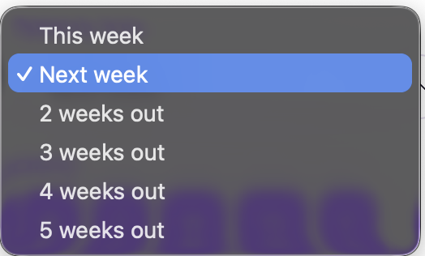
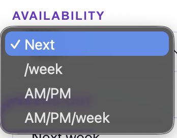
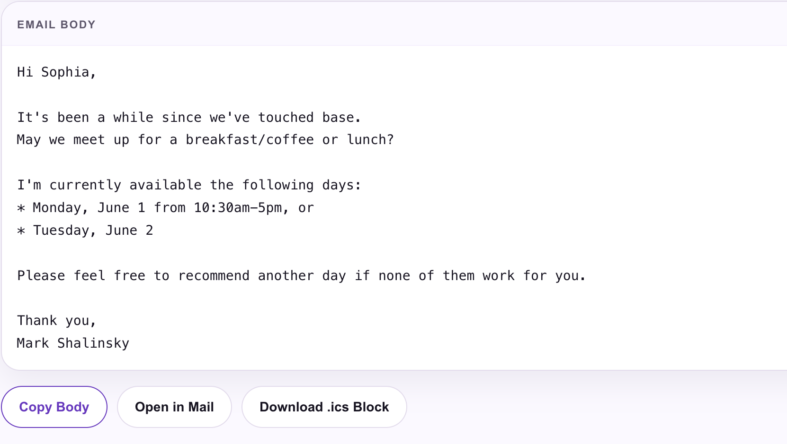

1
Connect your calendar
Paste your ICS calendar URL from Google Calendar, Outlook, or Apple Calendar. Your settings — name, email, and ICS URL — are saved for future sessions.
Paste your ICS calendar URL, pick your available days and time window, and generate a personalized availability email in seconds — ready to copy or open directly in Mail.
No Calendly links. No back-and-forth. Just a clean availability email pulled directly from your real calendar.
Paste your ICS calendar URL from Google Calendar, Outlook, or Apple Calendar. Your settings — name, email, and ICS URL — are saved for future sessions.
Select how far out to look — this week, next week, or up to 5 weeks out. Then pick which days of the week to include: M, T, W, Th, F.
Choose how to present your availability: full open windows, per-week slots, AM/PM blocks, or AM/PM by week — whatever matches how you work.
The app reads your real calendar, finds open windows, and writes a personalized email. Copy the body, open directly in Mail, or download an .ics block.
Every setting is designed around how salespeople and operators actually schedule meetings — not generic booking pages.

Pick how far out to search — this week through 5 weeks out. The app scans your real calendar and finds open windows within business hours.

Four modes: full open windows (Next), per-week slots (/week), AM/PM blocks, or AM/PM by week. Match the format to how your contacts prefer to schedule.

A clean, personalized availability email — addressed to the contact by name, with your real open days listed. Copy the body, open in Mail, or download an .ics block to attach.
Your real calendar. Not a booking link.
Most scheduling tools ask contacts to pick a slot from a link. Calendar Scheduler flips the model — you send your availability in the email itself, the way a real relationship conversation works. No link to click, no friction, no cold booking page.